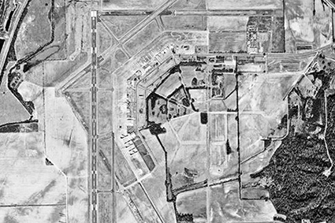

Orto-photographie photogrammetrie drone vendée
ORTHOPHOTOGRAPHIE AÉRIENNE PAR DRONE VENDEE
Ideclik Drone Agency
Présent sur la Vendée, Loire Atlantique, Morbihan, Ille et Vilaine, Maine et Loire, Charente Maritime, Gironde, vendee, Alliers.
DRONE orthophotographies aériennes géoréférencées vendee
Ideclik Drone Agency propose l'ortho-photographie ou ortho-image, par drone. Les photos aériennes ainsi captées à l’aide d’un drone, permettent d’effectuer des mesures comme sur une carte standard. Réalisées à basse altitude, ces prises de vue aérienne sont d'une précision directement proportionnelle à la résolution de l’image prise par l’appareil photo numérique embarqué.
Grâce au vol automatisé, le drone survole la surface à explorer de manière systématisée et la quadrille. Le pourcentage de recouvrement entre les clichés permettra de faire ressortir les reliefs, à la manière de la vision stéréoscopique humaine. Le plan de vol est téléchargé dans la mémoire du drone et sera évidemment adapté pour chaque mission de photogrammétrie.

En savoir +
Orthophotographies
En fonction de votre plan de navigation, le drone effectue un balayage aérien du secteur sur des axes parallèles, avec un décalage de quelques degrés, pour produire un effet de vision stéréoscopique à travers la caméra numérique.

En savoir +
Photogrammetrie
A l'Agence, les images sont analysées, traitées et corrigées afin d’éliminer toutes distorsions et effet de déplacement. Nos ordinateurs calculent le Modèle Numérique de Terrain MNT (représentation topographique d’une zone).

En savoir +
Géoréférencement
La photogrammétrie répond à des besoins variés dans le domaine de l’urbanisme, l’aménagement du territoire, la gestion des départements administratifs, la communication, l’agriculture, l’archéologie, les cimetières, les carrières...
L’orthophotogarphie par drone, au service de la photogrammétrie
Collectivités territoriales, géomètres experts ou spécialistes de l’environnement, nos drones vous accompagnent grâce à notre maitrise de de la photogrammétrie aérienne par drone . Le drone permet de reconstituer une image globale à faible altitude (entre 30 et 150M maximum) assurant ainsi une grande précision pour l’analyse de vos données. Un retraitement précis de celles-ci, permet la création d’un nuage de point ou d’une simulation 3D. Après la réalisation des prises de vues aériennes par drone, notre agence vous délivre une orthophotographie la plus précise. Au-delà, notre équipe vous accompagne sur le post-traitement, qui vous permettra d’analyser directement les données produites. Maitrisant le logiciel de traitement de données PIX4D, nous éditons les formats intégrables dans les logiciels métiers de type Autocad ou autres selon vos besoins.
IDECLIK DRONE AGENCY contact 06.87.27.86.24 ou par courriel contact@drone-vendee.com
drone photogrammétrie vendee - drone photogrammetrie vendee - drone modelisation 3d vendee - drone ortho-photo vendee - drone ortho pho vendee - drone ortho phographie vendee - drone Reportage vendee - drone Sport vendee - drone evenementiel vendee - drone tourisme vendee - drone agriculture vendee - drone etancheite vendee - drone medias vendee - drone architecture vendee - drone patrimoine vendee - drone btp vendee - drone immobilier vendee - drone suivi de chantier vendee - la roche sur yon drone vendee - drone photo la roche sur yon - drone photo vendee - drone photo vendee - drone vidéo vendee - drone vidéo drone vendee - drone immo vendee - drone vidéo clip vendee - réalisation clip video drone vendee - realisation vidéo vendee - drone tourisme vendee - photo aérienne drone vendee - photo aérienne vendee - drone photo panoramique vendee - photo panorama vendee - photo drone 360° vendee - photo aérienne drone vendee - timlapse photo chantier vendee - drone littoral vendee - drone suivi de chantier vendee - prestataire drone vendee - prestataire drone vendee - photo aerienne par drone vendee - photo vente iommobilier - 360° vendee - photo vente drone vendee - photo agence immobilier vendee - drone entreprise - drone evenementiel vendee - suivi chantier drone vendee - photo aerienne vendee - video aérienne vendee - film entreprise vendee - clip video entreprise vendee - prestation drone vendee - film institutionnel - video camping vendee - photo drone camping vendee - reportage photo camping vendee - reportage video camping vendee - realisation photo video camping vendee - video drone btp vendee - photo video drone btp vendee - drone suivi de chantier vendee 85 - realisation video drone vendee - prise de vue aerienne par drone vendee - drone etancheite vendee - drone genie civil vendee - drone travaux publics vendee - photo technique drone vendee - inspection drone vendee - controle drone vendee - suivi technique drone vendee - btp drone vendee - drone thermique vendee - drone bilan thermique vendee - drone institutionnel vendee - drone mairie vendee - drone collectivite vendee - drone departement vendee - drone departement vendee - captation drone vendee - photo drone ville vendee - video drone ville vendee - drone usine vendee - drone instrie vendee - drone video tourisme vendee - drone photo tourisme vendee - ideclik drone - chappaz vendee - fabrice chappaz - drone communication vendee - video communication vendee - photo communication vendee - comcom vendee - communaute de commune vendee - film institutionnel vendee - clip institutionnel vendee - drone construction vendee - drone batiment vendee - drone gite vendee - drone chateau vendee